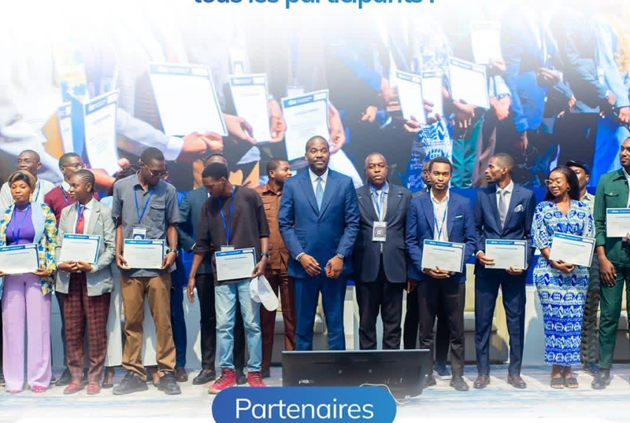
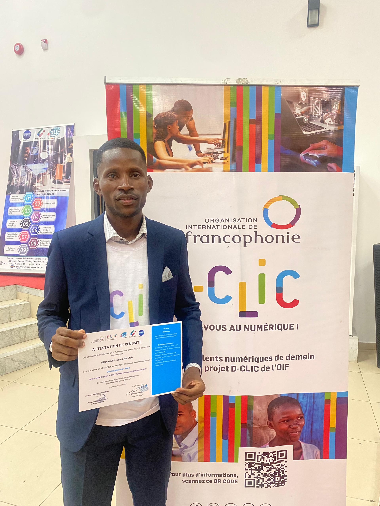

Développement Web
Conception des sites web modernes (vitrine, e-commerce, éducatifs), performants et parfaitement adaptés à tous les supports.
Implémentation des dernières technologies web pour une expérience utilisateur exceptionnelle.

OCH, CASE C4-23. BZV
+242 06-631-83-33
IT Consulting & Services
Nous vous proposons des services et vous accompagnons avec expertise dans vos processus de digitalisation.
Notre entreprise vous garantit une transformation numérique complète, parfaitement adaptée aux exigences de l'ère digitale.
Conception des sites web modernes (vitrine, e-commerce, éducatifs), performants et parfaitement adaptés à tous les supports.
Implémentation des dernières technologies web pour une expérience utilisateur exceptionnelle.
Développement des applications intuitives et performantes pour iOS et Android de types natifs et cross-platform optimisées pour une meilleure expérience utilisateur et intégrées aux dernières technologies mobiles.
Mise
en place des systemes informatiques pour tous.
Installation
des hotspots et bien plus pour la connectivité wiffi.
Nous
assurons la fiabilité des systèmes réseaux avec des solutions optimisées.
Protection complète de vos systèmes d'information contre les cybermenaces.
Audit de
sécurité, déploiement de solutions de protection avancées et formation de vos équipes pour
garantir une sécurité optimale.
Nous accompagnons nos clients au quotidien dans la résolution de problèmes liés à leurs ordinateurs, à leurs réseau d'entreprise, ainsi qu'à l'ensemble de leurs outils numériques.
installations des cameras de surveillance pour les particuliers et entreprise.
Bien d'autres services digitaux pour vous servir...


ORRYS NUMERIC est une entreprise spécialisée dans le developpements des applications et des solutions informatiques. Notament des sites vitrines, des plateformes interactives et des outils métiers.

